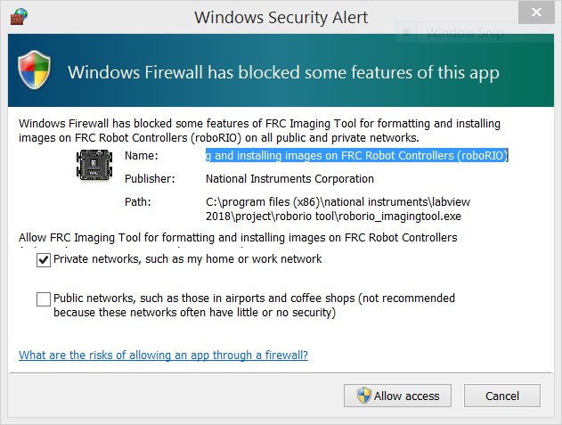

roboRIO Setup
Just as you need to format and install an Operating System on a new hard drive, the roboRIO needs to be "initialized" (or flashed). This is done by using the roboRIO Imaging Tool.
Note: You must use a Type A-B USB cable to connect your laptop to the roboRIO to perform the imaging.
Imaging your roboRIO
Follow through this detailed instruction on WPI site. Note that running the tool requires administrator rights.
Windows Firewall Issue
During imaging process the Windows firewall should be turned off. We recommend you do this first before starting the imaging process. Instruction can be found on WPI site here.
In case you are prompted with following alert, simply click Allow Access to proceed.
